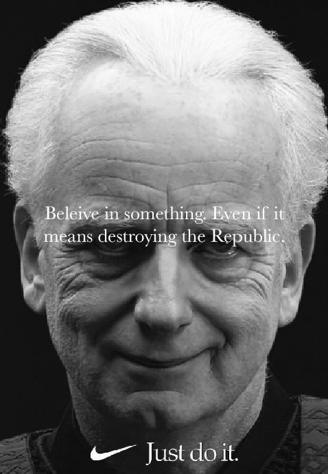

Warning: There is a wild pack of figures grazing on this page who may phase shift if startled, proceed with caution.
Figure 4.1: Palpatine was well known for his appreciation of irony.Figure 4.2: Palpatine helping a wayward youth realize that hate does, in fact, make you powerful.

Figure 4.3: Palpatine partnering with Nike in an effort to aspire young athletes throughout the galaxy.Figure 4.4: Palpatine put a ring on democracy shortly after this speech.Figure 4.5: George Lucas understood that if there's one thing children absolutely want in their space fantasy adventure movies more than anything else, it's a procedural sentate debate on intergalactic tax policy.